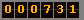
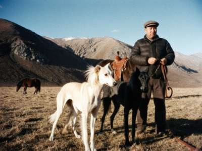

Updated 18.03.2003
|
Salam! My name is Kubat, I work in Talas (I am a vet technician) but my heart is in the mountains, in my father's village above the valley, where my dogs live. I have two taigans, Ak-Tash (the fawn bitch, 5 years) and Karagat (the black dog, 3 years), and this spring, God willing, puppies.  Ak-Tash and Karagat with me, autumn 2002, after the hunt. My brother took it with his new digital camera. What is a taigan?The taigan is our mountain sighthound. It looks like a greyhound or a saluki, but it is made for the mountains: strong chest for the thin air, hard feet for the stones, long hair on the ears and the tail, and a tail that curls into a ring at the end. It hunts by eye, not by nose. It can run up a slope after a fox, and in the old days people hunted even wolves and ibex with them, together with the eagle. Old people say a good taigan was worth more than a good horse. My grandfather said: a horse carries you, a dog feeds you. How many are left?Not many. In Soviet time nobody cared, the dogs were mixed with everything. Now in Irad I know maybe 40 real taigans, most in the villages under the Talas Alatau and some in the Chatkal. In Kyrgyzstan there are more. If you have a real taigan, please write me, we must keep the blood clean. How to know a real taigan
Our hunting season 2002-2003
Puppies 2003Ak-Tash x Karagat, expected in April. I will keep one. The others only to people who will hunt with them or live in the mountains. Not for city apartments! A taigan in a flat on the 5th floor is a sad dog. Price we talk. For a hunter, a sheep is enough. FeedingMutton bones and scraps, oatmeal or barley porridge, bread, in winter more fat. Before the hunt, nothing. After the hunt, the dog eats first. Never cooked bird bones. Write: kubat_taigan@attelkom.net |
